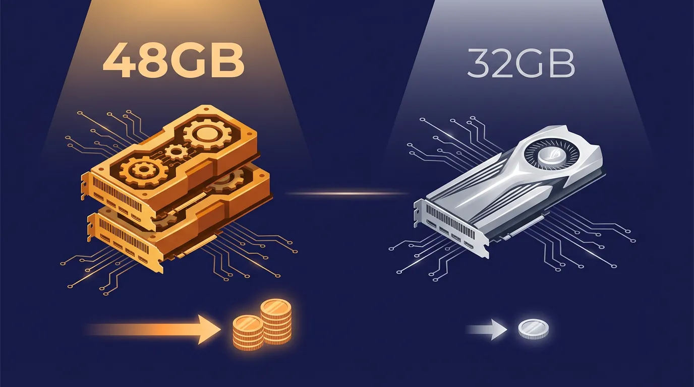
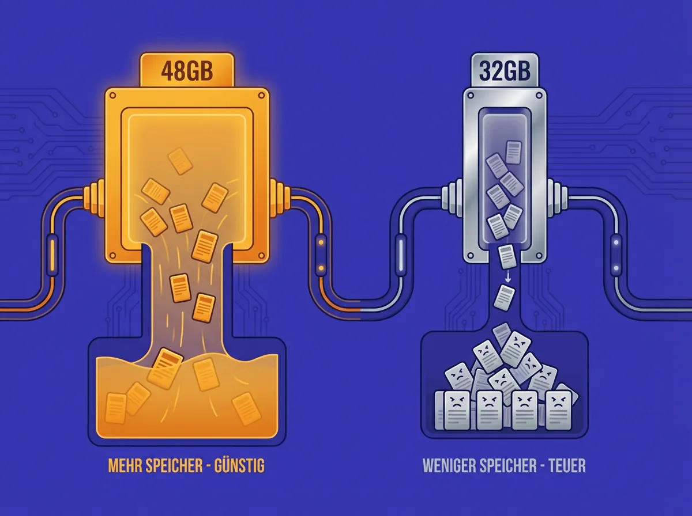
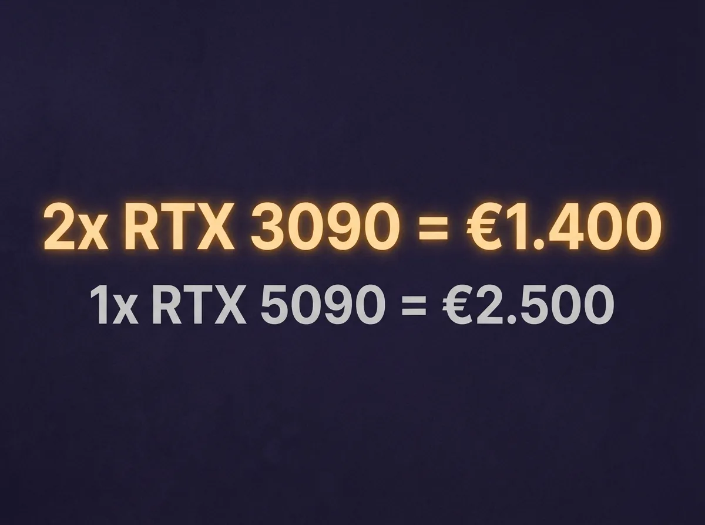
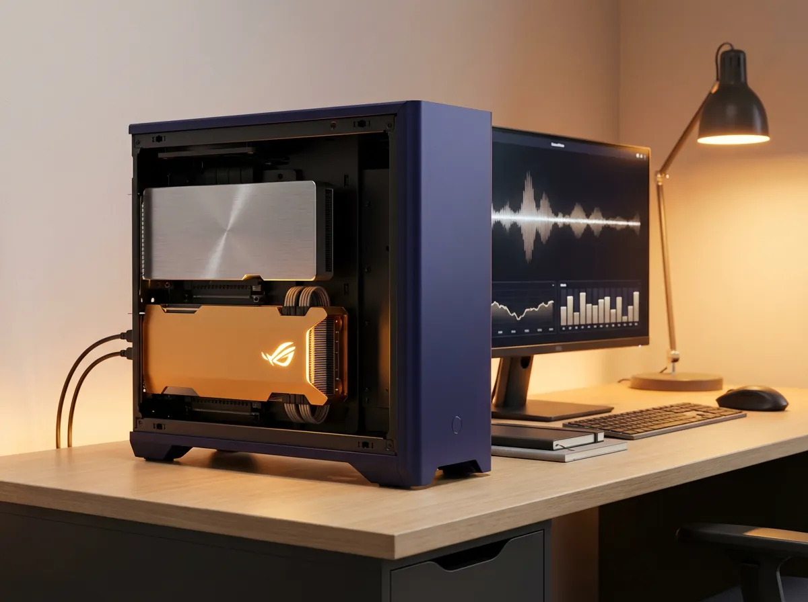

Cloud & Infrastruktur · · 10 Min.
KI-Hardware 2025: Warum zwei gebrauchte RTX 3090 die neue RTX 5090 schlagen
Aus dem Archiv: Dieser Beitrag ist vor über einem halben Jahr erschienen. Manche Zahlen und Produktnamen haben sich seither geändert.

Das Wichtigste in Kürze
- Die RTX 5090 (32 GB VRAM) kostet laut Geizhals €2.900 - €3.400 und ist für 70B-Modelle trotzdem zu klein
- Ein 70B-Modell in 4-bit Quantisierung belegt ~42 GB VRAM – plus KV-Cache für Kontext
- Zwei gebrauchte RTX 3090 bieten 48 GB VRAM für ca. €1.400 (50% mehr Speicher, halber Preis)
- Der entscheidende Flaschenhals ist VRAM-Kapazität, nicht Rechenleistung (TFLOPS)
- Break-Even gegenüber Cloud-APIs: 4-6 Monate bei intensiver Nutzung
Der Dezember 2025 ist ein seltsamer Zeitpunkt für GPU-Käufer. NVIDIAs RTX 5090 ist das schnellste Consumer-Produkt, das es je gab. Und trotzdem ist es für viele KI-Anwendungen die falsche Wahl.
Warum? Weil NVIDIA die Karte exakt so positioniert hat, dass sie die teuren Enterprise-Produkte (RTX 6000 Ada/Blackwell mit 48GB+) nicht kannibalisiert. 32 GB VRAM sind beeindruckend – aber gerade knapp genug, um bei ernsthaften Unternehmensmodellen an Grenzen zu stoßen.
Was ist der eigentliche Flaschenhals bei lokaler KI?
Der entscheidende Flaschenhals für lokale KI-Inferenz ist VRAM-Kapazität, nicht Rechenleistung. Ein Sprachmodell muss komplett in den Grafikspeicher passen – sobald Teile auf den System-RAM ausgelagert werden ("Offloading"), bricht die Performance um Faktor 10 bis 50 ein.
Die meisten Hardware-Tests messen TFLOPS (theoretische Rechenleistung). Für KI-Inferenz ist das die falsche Metrik. Was zählt: Passt mein Modell in den Speicher?
VRAM-Bedarf aktueller Modelle
| Modell | Parameter | VRAM (4-bit) | Passt auf RTX 5090? |
|---|---|---|---|
| Qwen 2.5 32B | 32B | ~20 GB | ✅ Ja, komfortabel |
| Mistral Large 3 (aktiv) | 41B | ~25 GB | ✅ Ja |
| Llama 3.3 70B | 70B | ~42 GB | ❌ Nein |
| DeepSeek-R1 Distill 70B | 70B | ~42 GB | ❌ Nein |
Dazu kommt der KV-Cache: Bei einem 128k-Kontext-Fenster (notwendig für die Analyse ganzer Codebasen oder Vertragswerke) belegt allein der Cache 10-20 GB zusätzlich.
Für ein KMU, das ein unternehmensweites RAG-System mit [rechtssicheren europäischen Modellen](/blog/open-source-illusion-llama-eu-ausschluss-kmu) aufbauen will, ist das ein Problem.
Die RTX 5090: Technische Daten und das strategische Dilemma
Laut NVIDIA basiert die RTX 5090 auf der Blackwell-Architektur (GB202 Chip) und bietet beeindruckende Spezifikationen:
| Spezifikation | RTX 5090 | Strategische Bedeutung |
|---|---|---|
| VRAM | 32 GB GDDR7 | +33% vs. RTX 4090. Reicht für ~40B, nicht für 70B. |
| Speicherbandbreite | 1.792 GB/s | Fast Verdoppelung. Extrem schnelle Token-Generierung. |
| Tensor Cores | Native FP4 | Theoretisch 2x Durchsatz bei kompatiblen Modellen. |
| Stromverbrauch | 500-600W Peak | Erfordert neue Infrastruktur (1200W+ Netzteil). |
| Preis (DACH) | €2.900 - €3.400 | Laut Geizhals. Hohe Investitionshürde. |
Das Dilemma
NVIDIA hat die RTX 5090 mit 32 GB VRAM exakt so positioniert, dass sie die lukrativen Enterprise-Karten nicht kannibalisiert. Für ein KMU bedeutet das:
Eine einzelne RTX 5090 ist extrem schnell, aber oft zu klein für die wirklich leistungsfähigen Unternehmens-Modelle (70B+).
In meinen WIFI-Workshops sehe ich immer wieder dasselbe Muster: Unternehmen kauft eine RTX 5090, weil "das Beste" gewollt ist. IT-Abteilung merkt: Für Qwen 32B ist die Karte überdimensioniert, für Llama 70B zu klein. Ergebnis: €3.000 für eine Karte, die weder das eine noch das andere optimal kann.
Warum ist der Gebrauchtmarkt strategisch überlegen?
Im Dezember 2025 zeigt sich auf dem Gebrauchtmarkt ein interessantes Phänomen: Der massive Preisverfall der RTX 3090 macht sie zur attraktivsten Option für budgetbewusste KMUs.

Preisvergleich
| Konfiguration | VRAM | Preis (Dez. 2025) | €/GB |
|---|---|---|---|
| 1x RTX 5090 | 32 GB | ~€3.000 | 94€ |
| 2x RTX 3090 (gebraucht) | 48 GB | ~€1.400 | 29€ |
| 2x RTX 5090 | 64 GB | ~€6.000 | 94€ |
Für den Preis einer RTX 5090 bekommen Sie 48 GB VRAM statt 32 GB – genug für ein Llama 70B mit komfortablem Kontext-Puffer.
Der NVLink-Vorteil
Die RTX 3090 ist die letzte Consumer-Karte, die NVLink unterstützt. Dieses Feature ermöglicht den schnellen Speicheraustausch zwischen zwei Karten – NVIDIA hat es bei der 4090/5090 gestrichen, um Enterprise-Verkäufe zu schützen.
Laut Kleinanzeigen und eBay werden gebrauchte RTX 3090 (24 GB) für €600 - €750 gehandelt. Zwei Karten = 48 GB VRAM für ca. €1.400.
Was die meisten übersehen: Die "Mittelmaß-Falle"
Die "Mittelmaß-Falle" beschreibt eine Situation, in der eine teure Karte weder für kleine noch für große Modelle optimal ist. Die RTX 5090 sitzt genau in dieser Falle.
Die strategisch besseren Optionen:
Option A: Klein und schnell
- Hardware: RTX 4070 Super (12 GB) für ~€600
- Modell: Mistral 8B, Phi-4, Qwen 2.5 Coder 14B
- Use Case: Einzelplatz-Assistenten, Code-Completion
- Vorteil: Günstig, leise, energieeffizient
Option B: Groß und kosteneffizient
- Hardware: 2x RTX 3090 (48 GB) für ~€1.400
- Modell: Llama 70B, DeepSeek-R1 Distill, Mistral Large 3
- Use Case: Unternehmensweiter KI-Server, RAG-Systeme
- Vorteil: 50% mehr VRAM als 5090, halber Preis
Option C: Maximum Performance
- Hardware: 2x RTX 5090 (64 GB) für ~€6.000
- Modell: Alle aktuellen Modelle mit vollem Kontext
- Use Case: Multi-User Server mit hohem Durchsatz
- Vorteil: Extreme Geschwindigkeit durch Blackwell
Apple Silicon: Wann ist der Mac die bessere Wahl?
Mit der M5-Chipfamilie hat Apple seine Position im lokalen KI-Markt gefestigt. Der Unified Memory-Ansatz erlaubt der GPU Zugriff auf den gesamten Systemarbeitsspeicher.
| Kriterium | Dual-RTX-3090 | Mac Studio M5 Ultra |
|---|---|---|
| VRAM/RAM | 48 GB | bis 128+ GB |
| Bandbreite | 2x 936 GB/s | ~800 GB/s |
| Token/s (70B) | 30-50 | 10-15 |
| Stromverbrauch | ~700W | ~150W |
| Geräusch | Laut (Server) | Leise |
| Preis | ~€1.400 + System | ~€8.000+ |
Wann Apple?
Laut Apple-Analysten könnte ein Mac Studio M5 Ultra bis zu 256-512 GB Unified Memory bieten. Das ermöglicht das Laden von Modellen, die selbst auf zwei RTX 5090 nicht passen würden (z.B. Llama 405B in starker Quantisierung).
Empfehlung:
- Für Chat-Anwendungen und schnelle Antworten → NVIDIA
- Für Analyse riesiger Dokumentenmengen (RAG mit 128k+ Kontext) → Apple
- Für mobile Demos beim Kunden → MacBook Pro M5 Max
Infrastruktur: Was Sie vor dem Kauf wissen müssen
Ein Dual-RTX-System ist kein Gaming-PC mehr – es ist ein Server mit spezifischen Anforderungen.

Stromversorgung
Laut technischen Analysen zieht ein Dual-RTX-5090-System unter Volllast 1.600 - 1.800 Watt.
| Anforderung | Spezifikation |
|---|---|
| Netzteil | 1600W Titanium, ATX 3.1 Standard |
| Stecker | Native 12V-2x6 (keine Adapter!) |
| Stromkreis | Dedizierte 16A-Absicherung prüfen |
Wichtig: Ein normaler Bürostromkreis (16A) liefert maximal 3.680 Watt. Zwei KI-Workstations am selben Kreis können beim gleichzeitigen Start die Sicherung auslösen.
Das 4-Slot-Problem
Die RTX 5090 belegt oft 3-4 PCIe-Slots. Auf einem Standard-Mainboard lassen sich zwei dieser Karten kaum montieren, ohne dass die obere Karte erstickt ("Thermal Throttling").
Lösungen:
- Wasserkühlung: Custom-Loops oder AIO (z.B. Alphacool Eiswolf) reduzieren auf 2 Slots
- Gehäuse: Big Tower (Fractal Design Define 7 XL) oder 4U-Rackmount für Server
- Lüfter: Industrial-Grade (Noctua Industrial, Delta) für 1000W+ Abwärme
Geräuschpegel
- Unter Volllast: Laut (>50 dB)
- Für Büros: Server in separaten Raum oder Keller
- Alternative: Wasserkühlung reduziert Lärm signifikant
TCO-Vergleich: Cloud vs. On-Premise
Die Entscheidung "Kaufen oder Mieten" lässt sich Ende 2025 klar kalkulieren.
| Kostenfaktor | Cloud API | Lokale Infrastruktur |
|---|---|---|
| Initialkosten | €0 | ~€12.000 (Dual-5090 System) |
| Laufende Kosten | €2.500-4.000/Monat* | ~€80/Monat (Strom) |
| Datenschutz | Daten verlassen Haus | Physisch garantiert |
| Break-Even | - | 4-6 Monate |
*Annahme: 50 Mitarbeiter x 200 Prompts/Tag x 2k Token
Bei intensiver Nutzung durch Agentic Workflows explodieren die Cloud-Kosten. Die lokale Hardware amortisiert sich in diesem Szenario extrem schnell.
Drei Szenarien für österreichische KMUs
Szenario A: Der Code-Assistent (Einzelplatz)
Anforderung: Ein Entwickler braucht lokalen Assistenten für Code-Autovervollständigung und Dokumentenanalyse.
| Komponente | Empfehlung | Kosten |
|---|---|---|
| GPU | RTX 5090 (32 GB) | ~€3.000 |
| Modell | Qwen 2.5 Coder 32B | - |
| System gesamt | Workstation | ~€5.000 |
Begründung: Die 32 GB VRAM reichen für 32B-Modelle in hoher Präzision. Die extreme Geschwindigkeit der Blackwell-Architektur sorgt für ein flüssiges Erlebnis, vergleichbar mit Copilot.
Szenario B: Der Unternehmens-Brain (RAG-Server)
Anforderung: Zentraler Server stellt Llama 70B oder DeepSeek-R1 für das gesamte Unternehmen bereit.
| Komponente | Performance-Lösung | Budget-Lösung |
|---|---|---|
| GPU | 2x RTX 5090 (64 GB) | 2x RTX 3090 (48 GB) |
| VRAM | 64 GB | 48 GB |
| Kosten GPU | ~€6.000 | ~€1.400 |
| System gesamt | ~€10.000 | ~€4.500 |
Begründung: Ein 70B-Modell in Q4_K_M belegt ~42 GB. Plus KV-Cache = über 48 GB nötig. Eine einzelne RTX 5090 reicht nicht.
Szenario C: Das Fine-Tuning Labor
Anforderung: KMU möchte Basismodelle mit eigenen Daten nachtrainieren (LoRA/QLoRA).
| Komponente | Empfehlung |
|---|---|
| GPU | 4x RTX 5090 oder RTX 6000 Ada |
| Plattform | Threadripper (64-128 PCIe-Lanes) |
| Kosten | €25.000+ |
Begründung: Training skaliert linear mit GPU-Anzahl. Consumer-CPUs bieten nur 20-24 PCIe-Lanes – für 4 GPUs ein Engpass.
Software: Welchen Stack sollten Sie verwenden?
Die Hardware ist der Motor, der Software-Stack der Treibstoff.

Open-Source-Pfad (empfohlen für KMUs)
| Tool | Stärke | Use Case |
|---|---|---|
| Ollama | Einfachste Bereitstellung | Interne Tools, Entwickler |
| vLLM | Höchste Performance | Linux-Server, Multi-User |
| LM Studio | GUI, keine Linux-Kenntnisse | Schnelles Testen |
Enterprise-Pfad
NVIDIA NIM (Inference Microservices) liefert 2-3x höhere Performance durch TensorRT-LLM. Aber: Die Lizenz kostet laut NVIDIA ca. €4.500 pro GPU/Jahr. Für KMUs kann das die Hardwarekosten schnell übersteigen.
Kompatibilitätswarnung (Stand Dez. 2025)
Die Blackwell-Architektur (Compute Capability 12.0) hat initiale Kompatibilitätsprobleme mit älteren CUDA-Versionen. PyTorch 2.5/2.6 unterstützt die 5090 oft nicht nativ – es müssen Nightly Builds verwendet werden.
Systemintegratoren im DACH-Raum
Für KMUs wird dringend empfohlen, nicht selbst zu bauen, sondern auf spezialisierte Integratoren zu setzen:
| Integrator | Standort | Spezialisierung |
|---|---|---|
| Mifcom | München | Wassergekühlte Multi-GPU ("Big Boss") |
| Ankermann | Teningen | Preis-Leistung, Business-Workstations |
| Bestware/Schenker | Leipzig | Mobile Workstations, Desktop |
| Brentford | Schweiz | Deep Learning, individuelle Konfig |
Die eine Frage vor dem Hardware-Kauf
Bevor Sie Hardware kaufen, beantworten Sie diese Frage:
Welches Modell (Größe, Quantisierung) löst mein konkretes Problem?
Erst wenn das klar ist, ergibt sich die Hardware automatisch.
- Ein 8B-Modell braucht keine RTX 5090
- Ein 70B-Modell braucht mehr als eine
- Die Falle: Hardware kaufen, weil sie "zukunftssicher" sein soll – und dann feststellen, dass sie weder für heute noch für morgen optimal ist
→ [In 15 Minuten klären, welche Hardware-Konfiguration für Ihr Szenario sinnvoll ist](/kontakt)
Weiterführende Artikel
- ["Open Source" ist ein Trugschluss](/blog/open-source-illusion-llama-eu-ausschluss-kmu) – Warum Modellwahl vor Hardware kommt
- [Das Schleusen-Prinzip](/blog/schleusen-prinzip-cloud-ki-hybrid) – Welche Daten lokal, welche in der Cloud
- [Der hybride Ansatz](/blog/hybrider-ansatz-cloud-lokal-ki-kmu-2026) – Die Gesamtstrategie
- [Der 100-Euro-Mitarbeiter](/blog/100-euro-mitarbeiter-ki-roi-kmu-oesterreich-2025) – ROI-Berechnung für KI-Investitionen
Quellen
- ComputerBase: RTX 5090 Verfügbarkeit und Preise
- PC Games Hardware: RTX 5090 Preisentwicklung
- Geizhals: RTX 5090 Preisvergleich
- Geizhals: RTX 3090 Preisvergleich
Armin Fradler begleitet Bildungsorganisationen und Teams beim Umgang mit KI und unterrichtet selbst in der Erwachsenenbildung.